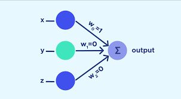

1837
Charles Babbage projetou as bases para o desenvolvimento dos computadores como os conhecemos hoje. Seu principal projeto, a máquina diferencial, sendo precursora dos cumputadores modernos, mas nunca conseguiu concretizar o projeto.
1843
Em meados do século XIX, a matemática e escritora britânica Ada Lovelace ousou ir além das limitações de sua época e criou o primeiro algoritmo destinado a ser processado por uma máquina. Essa contribuição mudou o rumo de tudo que foi criado nas décadas seguintes.
1888

Santiago Ramón y Cajal foi o primeiro a criar a doutrina
do neurônio. Médico patologista espanhol
descreveu a anatomia celular do cérebro e demonstrou mudanças dos neurônios durante o funcionamento do sistema
nervoso , por este feito, hoje é conhecido como o pai da neurociência moderna.
1943
A origem da IA data de 1943, quando Warren McCulloch e Walter Pitts criaram o primeiro modelo computacional para redes neurais.
1950
Quando os primeiros computadores começaram a funcionar, muitos já se perguntavam: Eles podem pensar? Em caso
positivo, um dia eles se equiparariam aos seres humanos? Pensando neste assunto, Turing publicou um artigo em
1950.
uring contribuiu, de maneira muito importante, para a chamada lógica matemática. chamado “Computing Machinery and Intelligence” na revista filosófica Mind, e resumidamente o artigo aborda sobre a capacidade que as máquinas tem de pensar e de serem inteligentes. Ao contrário do que muitos pensam, este artigo não é técnico e específico para profissionais de tecnologia da informação, podendo ser facilmente entendido por profissionais de todas as áreas. Turing inicia o artigo propondo a seguinte questão: “As máquinas podem pensar?”. Porém, como o processo de pensar é de difícil definição, ele trocou a pergunta para: “Há como imaginar um computador digital que faria bem o jogo da imitação?”.
1953
O nome inteligência artificial ainda não era usado, mas a criação é reconhecida como sua base de funcionamento. Em 1956, John McCarthy utilizou o termo pela primeira vez.
1958
O perceptron é um tipo de rede neural artificial inventada em 1958 por Frank Rosenblatt no Cornell Aeronautical Laboratory. Ele pode ser visto como o tipo mais simples de rede neural feedforward: um classificador linear.
1967
Matemático soviético e ucraniano Alexey Ivakhnenko desenvolveu o método de grupo de tratamento de dados, um método de aprendizagem estatística indutiva, pelo qual às vezes é referido como o "Pai da aprendizagem profunda".
1980
O NeocognitronOffsite Link, uma rede neural hierárquica multicamada que adquire a capacidade de reconhecer padrões visuais através da aprendizagem, pode ser um dos primeiros exemplos do que mais tarde foi chamado de “aprendizagem Offsite Linkprofunda”. Foi inventado em 1980 por Kunihiko FukushimaOffsite Link, enquanto na NHK Science & Technical Research Laboratories (STRL, NHK, NHK Hs Gijutsu Kenkyjo), com sede em Setagaya, TóquioOffsite Link. O Neocognitron foi utilizado para reconhecimento de caracteres anuscritos Offsite Linke outras tarefas.
1986
O backpropagation é indiscutivelmente o algoritmo mais importante na história das redes neurais – sem backpropagation, seria quase impossível treinar redes de aprendizagem profunda da forma que vemos hoje. O backpropagation pode ser considerado a pedra angular das redes neurais modernas e consequentemente do Deep Learning.
O algoritmo backpropagation foi originalmente introduzido na década de 1970, mas sua importância não foi totalmente apreciada até um famoso artigo de 1986 de David Rumelhart, Geoffrey Hinton e Ronald Williams. Esse artigo descreve várias redes neurais em que o backpropagation funciona muito mais rapidamente do que as abordagens anteriores de aprendizado, possibilitando o uso de redes neurais para resolver problemas que antes eram insolúveis.
1988

Yann LeCun et al. propôs a forma original do LeNet que foi uma das primeiras redes neurais convolucionais e promoveu o desenvolvimento do aprendizado profundo . Desde 1988, após anos de pesquisa e muitas iterações bem-sucedidas, o trabalho pioneiro foi denominado LeNet-5 em 1995 tendo aplicações prátivas dez anos depois.
2006
Criado pelo cientista de dados Fei-Fei Li em 2006, o banco de dados ImageNet contém agora mais de 14 milhões de imagens anotadas. Ele desempenhou um papel fundamental no avanço da visão computacional em aplicações como reconhecimento de objetos, classificação de imagens e localização de objetos.
Tudo começou em 1985. George A. Miller e sua equipe da Universidade de Princeton começaram a trabalhar no WordNet, um banco de dados lexical para a língua inglesa. Como um cruzamento entre um dicionário e um tesauro, possibilitou aplicações em Processamento de Linguagem Natural (PNL).
Avançando 21 anos, o cientista de dados Fei-Fei Li teve a ideia do ImageNet na Universidade de Illinois Urbana-Champaign. Na época, a maioria dos pesquisadores de IA pensava que os algoritmos eram mais importantes do que os próprios dados. No entanto, Li estava convencido de que grandes quantidades de dados do mundo real tornariam os algoritmos mais precisos. A essa altura, o WordNet estava maduro e a versão 3.0 havia sido lançada recentemente. Quando Li conheceu a pesquisadora do WordNet, Christiane Fellbaum, da Universidade de Princeton, ela decidiu usar a base de palavras e a hierarquia do WordNet para seu ambicioso banco de dados de imagens. Seu objetivo? Apoiar a pesquisa de software de reconhecimento visual de objetos.
2009
Em 2009, descobriu-se que substituir o pré-treinamento por grandes dados em determinados contextos poderia fazer com que as redes neurais profundas superassem em grande parte seus rivais, o modelo de mistura gaussiana (GMM)/modelo oculto de Markov (HMM).
A Nvidia criou o que é chamado de 'big bang' no aprendizado profundo, unindo-se a pesquisadores – especialmente do Google – para construir sistemas de aprendizado profundo baseados em GPU que poderiam acelerar os cálculos em 100 vezes. Compiladores de aprendizagem profunda e máquinas virtuais são ativamente desenvolvidos pelos fabricantes de placas gráficas, paralelamente aos processadores tensores, dedicados à “IA”.
2011
AlexNet é o nome de uma arquitetura de rede neural convolucional (CNN), projetada por Alex Krizhevsky emcolaboração com Ilya Sutskever e Geoffrey Hinton , que foi Ph.D. conselheiro da Universidade de Toronto.
AlexNet competiu no ImageNet Large Scale Visual Recognition Challenge em 30 de setembro de 2012. A rede alcançou um erro entre os 5 primeiros de 15,3%, mais de 10,8 pontos percentuais abaixo do segundo colocado. O principal resultado do artigo original foi que a profundidade do modelo era essencial para seu alto desempenho, que era computacionalmente caro, mas viabilizado devido à utilização de unidades de processamento gráfico (GPUs) durante o treinamento.
2012
Os cientistas da computação do misterioso laboratório X do Google construíram uma rede neural de 16 mil processadores de computador com um bilhão de conexões e permitiram que ela navegasse no YouTube, eles fizeram o que muitos usuários da web poderiam fazer: começaram a procurar gatos.
2014
DeepFace foi produzido por um grupo de cientistas da equipe de pesquisa de inteligência artificial do Facebook . A equipe inclui Yainiv Taigman e um cientista pesquisador do Facebook, Ming Yang. Eles também se juntaram a Lior Wolf, membro do corpo docente da Universidade de Tel Aviv . Yaniv Taigman veio para o Facebook quando o Facebook adquiriu o Face.com em 2012.
O usuários no início de 2015 e tem expandido continuamente o uso e o software do DeepFace. O DeepFace, segundo o diretor de pesquisa de inteligência artificial do Facebook , não tem como objetivo invadir a privacidade individual. Em vez disso, o DeepFace alerta os indivíduos quando seu rosto aparece em qualquer foto postada no Facebook. Ao receber esta notificação, eles têm a opção de retirar o rosto da foto.
2015

O Google desenvolveu uma nova inteligência artificial de conversa que usa redes neurais para aprender diálogos de filmes — e ela pode conversar normalmente sobre ética e problemas de VPN.
A nova inteligência artificial evita técnicas comuns usadas na criação de chatbots — que geralmente consistem em engenheiros programando regras de como o robô deve lidar com conversas e questões — e usa redes neurais que podem aprender sozinhas.
2016
AlphaGo versus Lee Sedol, também chamado de Google DeepMind Challenge Match, foi uma disputa de 5 jogos entre um supercomputador da Google, intitulado AlphaGo, contra o sul-coreano Lee Sedol no milenar jogo de tabuleiro Go, entre os dias 9 e 15 Março de 2016 no Four Seasons Hotel da cidade sul-coreana de Seul.
2017
AlphaGo Zero
AlphaGo Zero é uma versão do software Go AlphaGo da DeepMind. A equipe do AlphaGo publicou um artigo na revista Nature em 19 de outubro de 2017, apresentando o AlphaGo Zero, uma versão criada sem usar dados de jogos humanos e mais forte que qualquer versão anterior. Ao jogar contra si mesmo, AlphaGo Zero superou a força de AlphaGo Lee em três dias ao vencer 100 jogos a 0, atingiu o nível de AlphaGo Master em 21 dias e superou todas as versões antigas em 40 dias.
2018
Rede Adversarial Generativa (GAN)
A GAN, é um tipo de arquitetura de rede neural para modelagem generativa.
A modelagem generativa envolve o uso de um modelo para gerar novos exemplos que provêm plausivelmente de uma distribuição existente de amostras, como a geração de novas fotografias que são semelhantes, mas especificamente diferentes de um conjunto de dados de fotografias existentes.
Um GAN é um modelo generativo treinado usando dois modelos de rede neural. Um modelo é chamado de modelo “ gerador ” ou “ rede generativa ” que aprende a gerar novas amostras plausíveis. O outro modelo é chamado de “ discriminador ” ou “ rede discriminativa ” e aprende a diferenciar exemplos gerados de exemplos reais.
- Gerar exemplos para conjuntos de dados de imagens
- Gerar fotografias de rostos humanos
- Gere fotografias realistas
- Gerar personagens de desenhos animados
- Tradução imagem para imagem
- Tradução de texto para imagem
- Tradução semântica de imagem para foto
- Geração de visão frontal facial
- Gere novas poses humanas
- Fotos para Emojis
- Edição de fotografia
- Envelhecimento facial
- Mistura de fotos
- Super resolução
- Pintura fotográfica
- Tradução de roupas
- Previsão de vídeo
- Geração de objetos 3D
2019
Deepfake Sansung
Pesquisadores da Samsung Labs revelaram uma nova tecnologia de inteligência artificial que promete elevar o nível de criação de deepfakes. O método é capaz de gerar “imagens realistas de alta definição” de diferentes personalidades, utilizando uma única foto de origem.
2020
GPT-3
Generative Pre-Training Transformer 3 é um modelo de linguagem autorregressivo que usa aprendizagem profunda para produzir texto semelhante ao humano.
Data de lançamento: 11 de junho de 2020
Desenvolvedor: OpenAI Estado do desenvolvimento: Beta Lançamento: 11 de junho de 2020 (3 anos) Licença: Proprietária Página oficial: openai.com/blog/openai-api2021
Avanços
Segundo uma pesquisa feita pelo Capterra, que investigava o uso de chatbots na área da saúde, cerca de 39% dos pacientes tiveram a experiência de interagir com um chatbot ou assistente virtual e, desse total, 61% tiveram essa interação após o início da pandemia.
Em 2021, a pandemia da Covid-19 ainda não tinha acabado, em resultado disso, as formas de Inteligência Artificial que possibilitavam a manutenção do isolamento social cresceram durante o período.
Esse é o caso dos chatbots, que proporcionaram atendimento aos clientes e resolveram problemas simples, diminuindo a necessidade de buscar assistência presencial. Também foi possível integrar a tecnologia com diferentes plataformas, inclusive redes sociais.
2022
Mais Avanços
- Expansão da criatividade
- Aumento de comandos por voz
- Melhor compreensão da linguagem
2023
Destaques
- O ano dos chatbots
- IAs para geração de imagens
- IA em tudo
- Impacto sobre empregos
- Regulamentação e direitos autorais
2024
Novidades - Como a IA fará parte do seu dia a dia em 2024
A CNN ouviu especialistas em tecnologia e inteligência artificial para entender como a IA deve estar cada vez mais presente em nossa rotina a partir deste ano e o que deve mudar na prática com essas novas possibilidades e ferramentas.
“Acho que a gente vai começar a incorporar cada vez mais esse tipo de ferramenta no nosso dia a dia, seja para nos auxiliar no processo de produção de algum conteúdo ou com alguma coisa que a gente precisa fazer, como também auxiliar a gente em processos de pesquisa, de busca de informação”, afirma Diogo Cortiz, professor da PUC-SP.
Segundo Cortiz, a IA deve passar a funcionar “mais ou menos como um companheiro de trabalho para nos auxiliar em diversas tarefas”.
No fim das contas, a grande mudança que a inteligência artificial traz é na forma como se dá o diálogo com a tecnologia.
Se desde a criação dos softwares estamos acostumamos a dar comandos para a tecnologia executar, agora será uma questão de pedir. E é bem mais fácil fazer um pedido do que memorizar cada comando e o que ele faz.